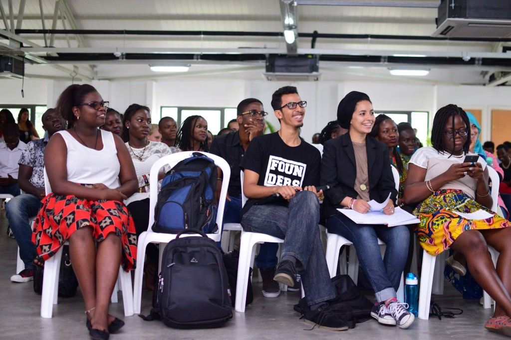

Activities @ALU
ALU ConnectEngage with the world around you. Integrate into the ALU and Mauritian community, culture and customs. Build and maintain lifelong friendships and networks through advisory squads, shared living spaces, social outings and just making time for friends and family. ALUConnect lets you laugh and share with those around you. |
ALU GiveGive your time and resources to help others. Utilize your strengths, talents and resources to give back to the community. We partner with SOS Poverty Mauritius and other local organisations to mentor in the community and clean the environment. |
ALU MaintainEnsure harmony and balance in mind, body and spirit. Focus on your overall alignment and well being with guided nutrition and hygiene talks, counselling, fitcamp and spiritual engagement. |
ALU MoveMaintain a healthy body and mind through physical activity. Get active and participate in physically engaging games and challenges such as ultimate frisbee, swimming, soccer, volleyball, basketball and more. Build your team spirit through team sports. |
Student Committees

Assembly
What do you do when your busy, engaging and fruitful week is finally coming to an end? You go for an ALU Assembly. This is a time when the entire ALU community comes together to reflect on the past week. The Assembly Committee organises a show that entertains, informs, educates and inspires everyone.
Student Representative Council
The Student Representative Council (SRC) is a group of students that have been elected by the study body to represent the interests of the student body in administrative matters pertaining to their ALU experience. They work hand in hand with the university to ensure that student voices are heard and support students in their holistic development and well-being through the guidelines and bylaws of the SRC Constitution. The SRC consists of the following positions: SRC President, Vice President, Secretary, Treasurer, Academics Rep, ALU Alive Rep, Social Transformation Rep, and Clubs and Societies Rep. All students are eligible to run for positions within the SRC.
Election Committee
The Election Committee is an independent group of students who organize and run elections for the positions of the Student Representative Council. They serve as a body to ensure elections are conducted fairly and in compliance with the SRC constitution.
ALU ALIVE Committee
ALU Alive Committee is made up of 5 students who represent the different components of the ALU Alive Model (#Move, #Connect, #Unplug, #Maintain, #Give). They work with the ALU Alive Rep of the SRC to organize events and initiatives to support the overall wellness of the student body in these 5 initiatives. Activities of the Committee include organizing intra- and inter-university sporting events, community service and engagement, yoga and meditation, and more.
Class Representative
Each class at ALU by year and program has a representative dedicated to ensuring that feedback and concerns pertaining to academics are raised through the SRC. Class Reps work with the Academic Rep of the SRC to provide real-time feedback on the academic experience and support in the dissemination of information through the SRC and administration.
 |
 |
 |